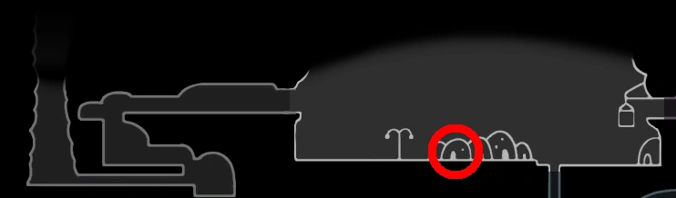

Esse amuleto pode ser útil em batalhas contra alguns Chefes do jogo, em particular naquelas onde é difícil desviar de todos os golpes. O maior tempo de invulnerabilidade permitirá que o Cavaleiro golpeie mais vezes o oponente sem se preocupar com outro dano subsequente. O amuleto também pode ser útil nas provações do Coliseu dos Tolos, onde há vários inimigos com ataques que são difíceis de desviar.

Carapaça Robusta
Ele é vendido pelo Sly na sua loja em Dirtmouth por 200 Geo.
